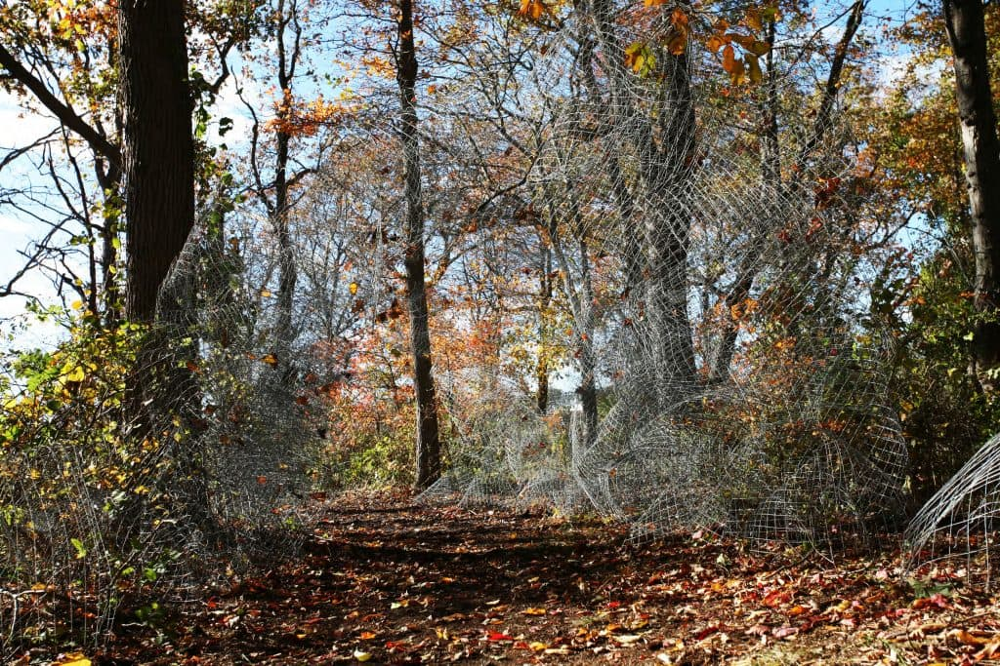
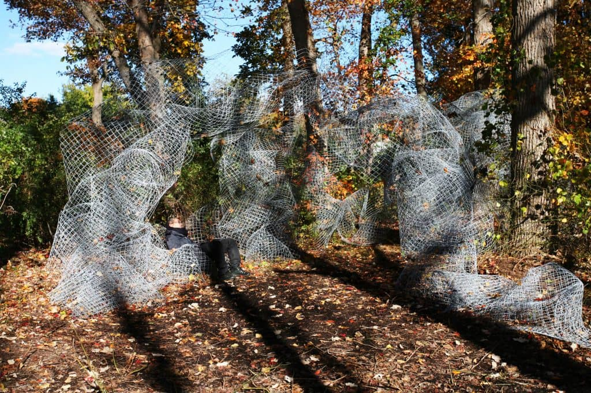
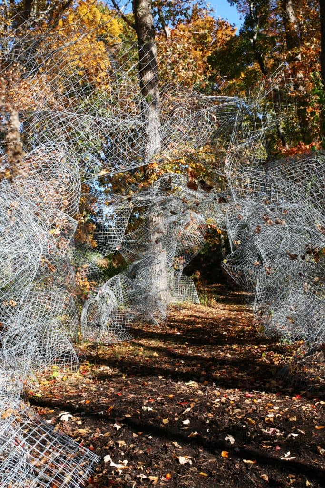
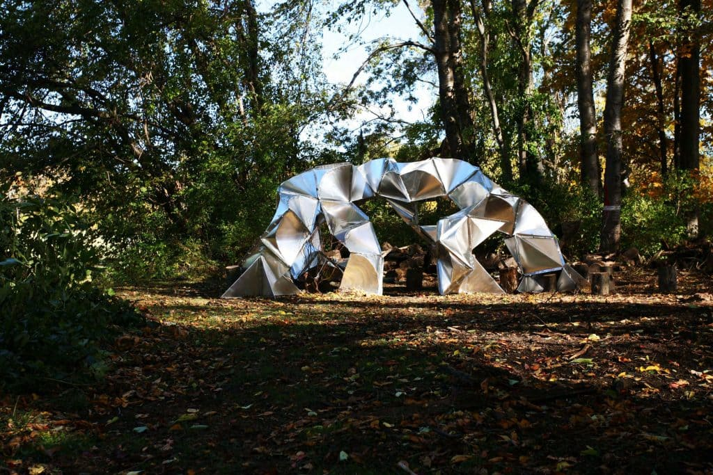
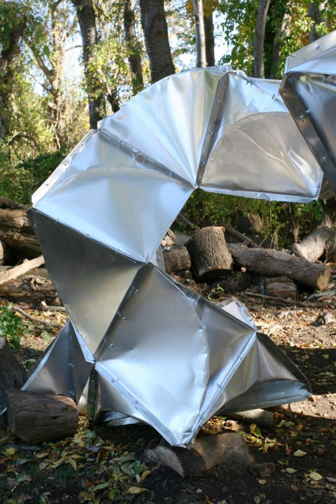

RISD Responsive Structures 2015





RISD Responsive Structures 2015
Responsive Structures for the Coastal Edge was a 10 day workshop at the Rhode Island School of Design’s Farm on Narragansett Bay. The workshop taught students to investigate and maximize the structural and spatial capacity of the selected material. Students develop a form and tectonic that evolve from a series of model making and prototyping experiments. The mesh team developed the “Fall Leaf Catcher”, a 20’-long arched passageway which captured the brightly colored autumn leaves from the trees above. From certain angles, the passage appeared to dissolve into its woodland surroundings, allowing the leaves to float mid air. The structural module resembled a fortune cookie and provided compressive strength from certain angles. The density and geometries of the mesh varied to provide different types of structural support, ranging from columns to arches, to benches which could support the weight of a person. These changing densities also create a complex, varied visual screen to the wooded surroundings. The sheet metal team used off-the-shelf 3’x3’ aluminum panels from Home Depot to develop a module with a curved fold, and were aggregated to form a faceted, reflective pavilion with built-in seating. The crimped edge detail acts as a type of beam, and was inspired by the tectonic of standing seam roofs. The modules were used to an integral seat for contemplation within the woodland.
© 2023 BACH ARCHITECTURE. All rights reserved. | 3752 20th Street, San Francisco, CA 94110 | (415) 425-8582 | · info@bach-architecture.com